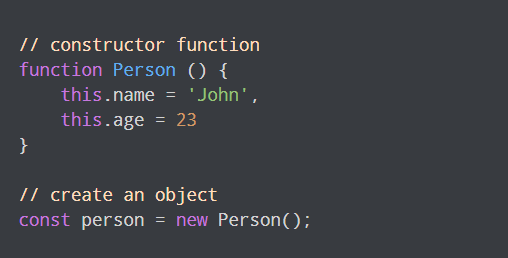
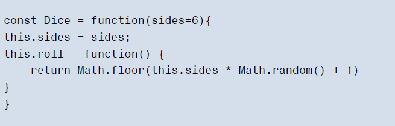

Form Methods
- The
form.submit()will submit the form automatically. - The
form.reset()method will reset all the form controls back to their initial values specified in the HTML. - The
form.actionproperty can be used to set the action attribute of a form, so it’s sent to a different URL to be processed on the server
Input Fields
- Input fields are the most common types of form control.
See my Examples below:
Object-oriented programming
Encapsulation
- keeping all the programming logic inside an object and making methods available to implement the functionality, without the outside world needing to know how it’s done.

Polymorphism
- the same process can be used for different objects.
- various objects can share the same method, but also have the ability to override shared methods with a more specific implementation.

Inheritance
- taking the features of one object then adding some new features.
- we can take an object that already exists and inherit all its properties and methods. We can then improve on its functionality by adding new properties and methods.

Constructor Function
constructor function is used to create objects
To create an object from a constructor function, we use the new keyword.
-

another example
Libraries
- a piece of code that provides several methods that make it easier to achieve common tasks
- A library will abstract functionality into easier-to-use functions and methods. These can then be used to complete common tasks without having to use lots of repetitive code.